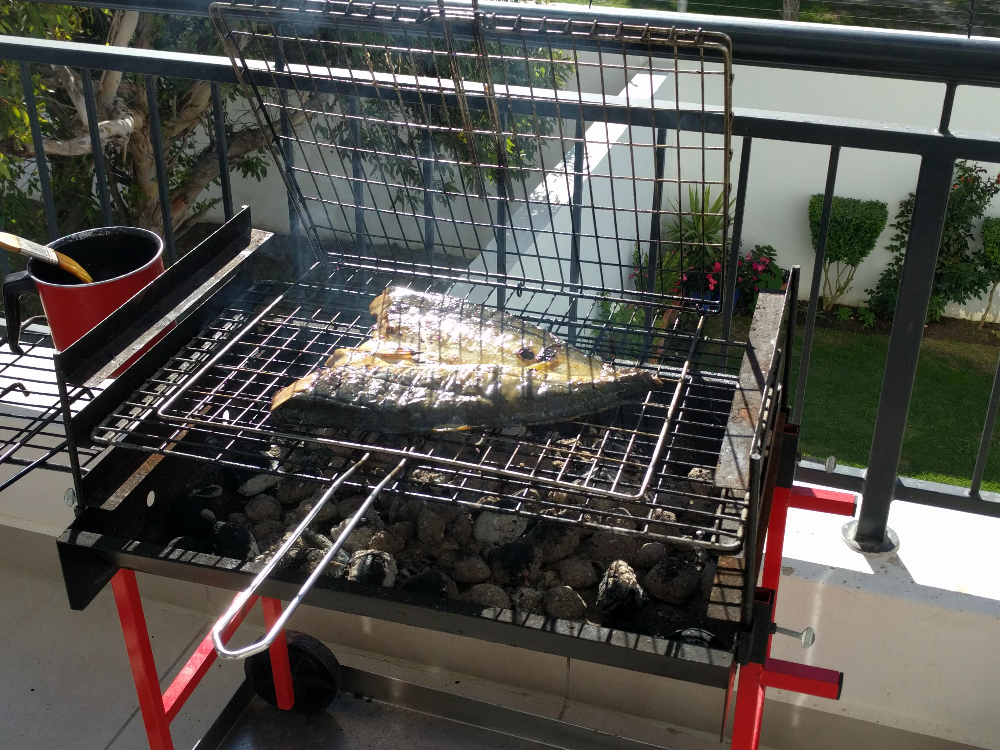
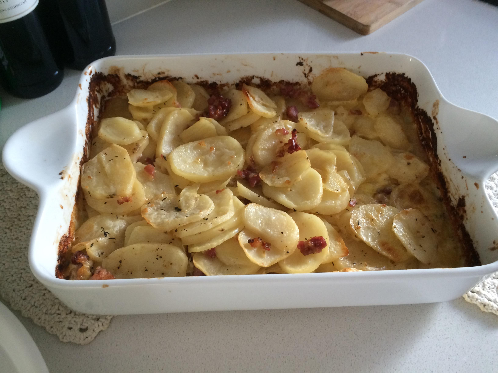
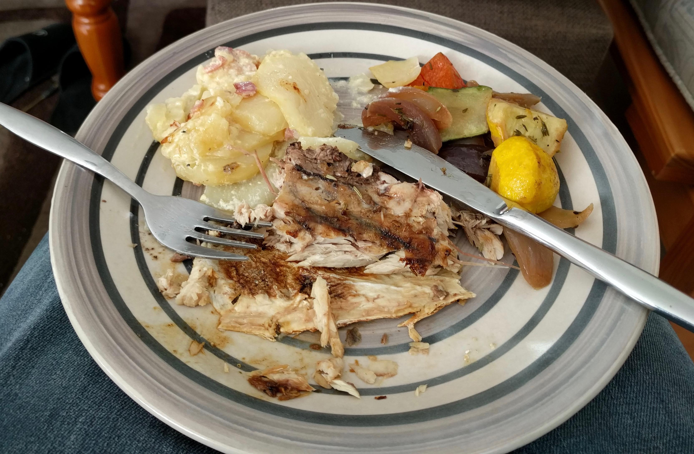
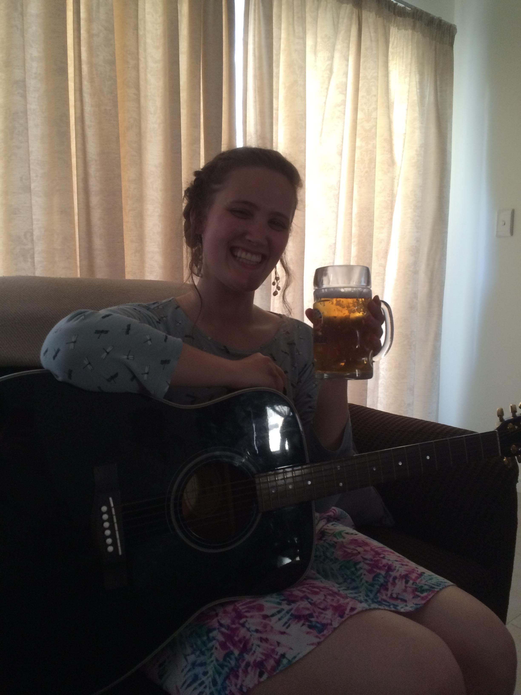
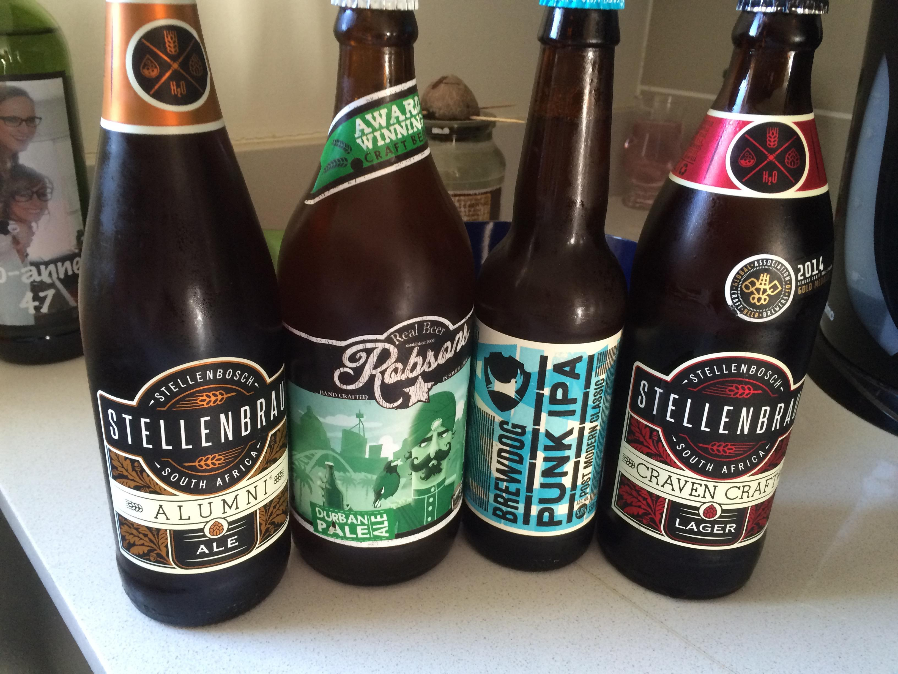
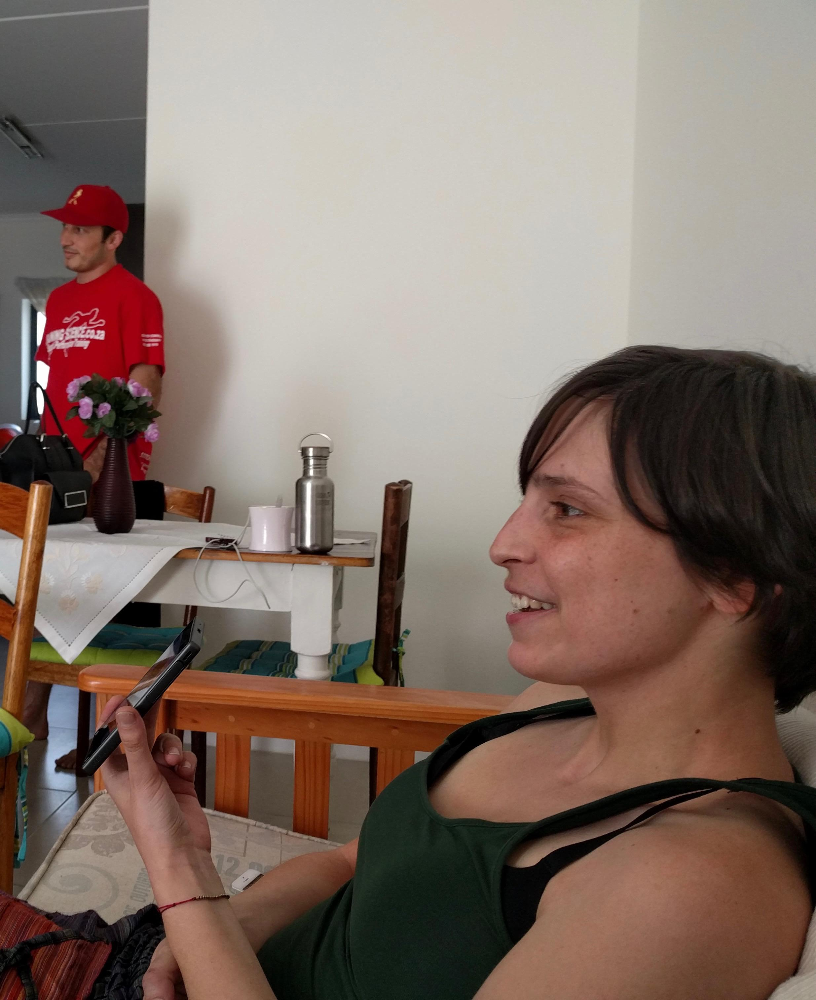
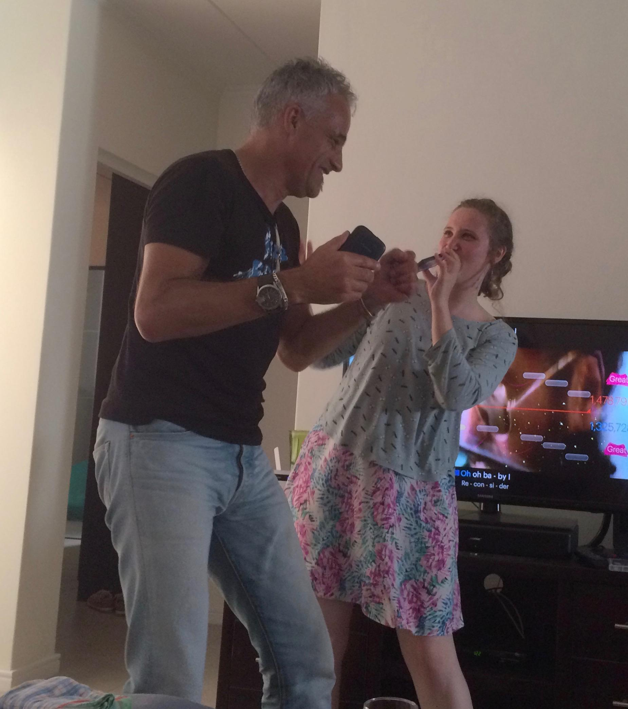

Tag 6 – Fish n Chill
By Evita Bley

Sonntag. Die Bauarbeiten gegenüber für die neue Mall machen heute Pause! Es ist nahezu still. Herrlich. Genau der richtige Tag, um zu entspannen. Heute passiert nicht so viel, denke ich. Ein netter Grillnachmittag und ausruhen. Da hab ich wohl falsch gedacht. Um 12 Uhr kommen Jeanines Mama und Willie, sie bringen einen riiiiiesigen Grill mit, das klingt gut! Allerdings wollen sie darauf Fisch zubereiten. FISCH! Ich und Fisch?! Gut, ruhig bleiben, ich werde nicht sterben, die anderen sterben ja auch nicht.

Es wird gequatscht, gelacht, schon ein bisschen „geschnasselt“ von anderen Sachen. Jeanines Mama hat einen Kartoffelauflauf gemacht und Jeanine selbst hat Gemüse auf den Grill gepackt. Es gibt Yellowtail Fish, also Gelbschwanzfisch. Und Willie ist für ihn verantwortlich. Ich habe Angst … Ich habe noch nie ernsthaft Fisch gegessen. Ich mag den Geruch nicht und irgendwie hat sich immer alles in mir dagegen gesträubt. Aber halt! Ich werde es probieren. Los geht’s!

Huch?! Es schmeckt ein bisschen nach Hühnchen und ist ein Mü zu sauer. Aber lecker. Also wirklich lecker :) Auch das Kartoffelgericht hat genau dazu gepasst. Herrlich! Martin und ich sind begeistert, auch Martin hat seit über 10 Jahren keinen Fisch mehr angerührt. Also ein rundum gelungener „Braai-Nachmittag“.


Jeanines Familie ist verrückt :D Es wird bis 19 Uhr Wein und Bier getrunken und SingStar gespielt. Jeder macht mit, sogar Martin (der so was sonst hasst) lässt sich breitschlagen und singt ein Lied. Dann holt Jeanine noch die Gitarre hervor und wir musizieren zusammen. Jeanine ist eine großartige Sängerin! Es hat riesigen Spaß gemacht mit ihr zu singen. Und ihre Mutter und Willie hatten auch sichtlich Spaß die ganze Zeit. Danke.


Den Abend noch relaxt beim Rest von „Inside Out“, wirklich ein schöner Film. Und morgen geht es wiedermal nach Stellenbosch. Auto abholen …